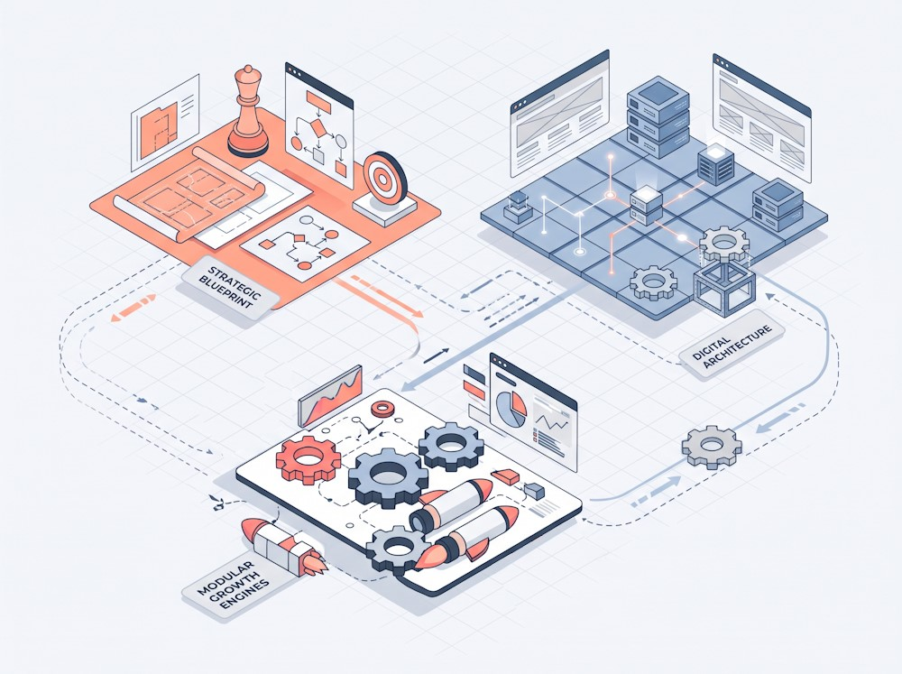

We bridge the gap between high-level business strategy and digital execution. Stop draining your runway on vague marketing retainers or failing DIY experiments. Build digital ecosystems that drive revenue and valuation.

The two most common paths to growth are broken. We built a third option.
Bloated 12-month retainers focused on vanity metrics, generic copy, and 'brand awareness.' High cash burn with zero connection to your actual revenue model, sales pipeline, or platform liquidity.
Founders wasting hundreds of hours acting as amateur marketers, guessing at tech stacks, and running unoptimized paid ads. A 90% failure rate for DIY campaigns, severe founder burnout, and a patched-together digital footprint that repels investors.
Fractional operating partners. We architect investor-grade digital foundations, then execute highly targeted 'Growth Sprints.' You pay only for what you need, when you need it—with total commercial accountability and measurable ROI.
Modular growth solutions built for your current stage of scale.
Turn your vision into an investable reality. We define your business model canvas, architect demand-generation funnels, and craft the strategic narratives required to secure funding and achieve platform liquidity.
Explore StrategyBuild a foundation that scales. We evaluate, deploy, and connect the technology you need—from high-converting websites and CRM pipelines to marketing automation and remote team infrastructure.
Explore ArchitecturePredictable revenue without the agency retainers. Spin up highly targeted, data-backed sprints for B2B lead generation, authoritative content, and paid media only when you are ready to scale.
Explore Growth SprintsOmniMACS wasn't born in a traditional marketing agency. It was built at the intersection of commercial scale and specialized tech startups. Having managed a $40M P&L at Flight Centre and spent over a decade architecting complex platforms alongside startups like Eventerprise and CobbleWeb, I know what it takes to build ecosystems that survive contact with the real world. We don't just generate marketing copy—we reverse-engineer your digital footprint to make your company profitable, scalable, and investable.
Read the Full Track RecordBook a free 30-minute discovery call to discuss your current roadblocks and map out your next growth sprint.
Book a Strategy Call